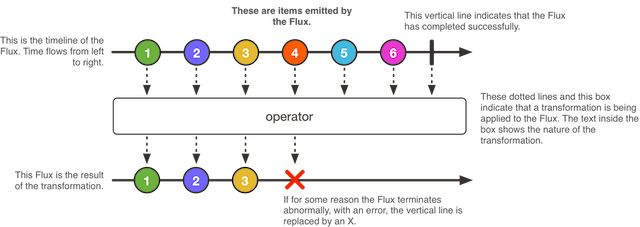
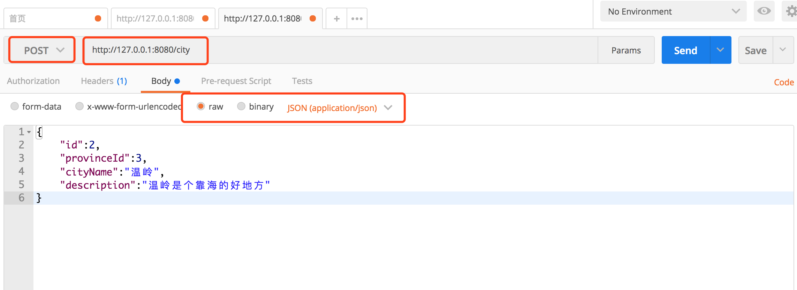

- 01 导读：课程概要.md.html
- 02 WebFlux 快速入门实践.md.html
- 03 WebFlux Web CRUD 实践.md.html
- 04 WebFlux 整合 MongoDB.md.html
- 05 WebFlux 整合 Thymeleaf.md.html
- 06 WebFlux 中 Thymeleaf 和 MongoDB 实践.md.html
- 07 WebFlux 整合 Redis.md.html
- 08 WebFlux 中 Redis 实现缓存.md.html
- 09 WebFlux 中 WebSocket 实现通信.md.html
- 10 WebFlux 集成测试及部署.md.html
- 11 WebFlux 实战图书管理系统.md.html
- 捐赠
03 WebFlux Web CRUD 实践
上一篇基于功能性端点去创建一个简单服务，实现了 Hello。这一篇用 Spring Boot WebFlux 的注解控制层技术创建一个 CRUD WebFlux 应用，让开发更方便。这里我们不对数据库储存进行访问，因为后续会讲到，而且这里主要是讲一个完整的 WebFlux CRUD。
结构
这个工程会对城市（City）进行管理实现 CRUD 操作。该工程创建编写后，得到下面的结构，其目录结构如下：
├── pom.xml
├── src
│ └── main
│ ├── java
│ │ └── org
│ │ └── spring
│ │ └── springboot
│ │ ├── Application.java
│ │ ├── dao
│ │ │ └── CityRepository.java
│ │ ├── domain
│ │ │ └── City.java
│ │ ├── handler
│ │ │ └── CityHandler.java
│ │ └── webflux
│ │ └── controller
│ │ └── CityWebFluxController.java
│ └── resources
│ └── application.properties
└── target
如目录结构，我们需要编写的内容按顺序有：
- 对象
- 数据访问层类 Repository
- 处理器类 Handler
- 控制器类 Controller
对象
新建包 org.spring.springboot.domain，作为编写城市实体对象类。新建城市（City）对象 City，代码如下：
/**
* 城市实体类
*
*/
public class City {
/**
* 城市编号
*/
private Long id;
/**
* 省份编号
*/
private Long provinceId;
/**
* 城市名称
*/
private String cityName;
/**
* 描述
*/
private String description;
public Long getId() {
return id;
}
public void setId(Long id) {
this.id = id;
}
public Long getProvinceId() {
return provinceId;
}
public void setProvinceId(Long provinceId) {
this.provinceId = provinceId;
}
public String getCityName() {
return cityName;
}
public void setCityName(String cityName) {
this.cityName = cityName;
}
public String getDescription() {
return description;
}
public void setDescription(String description) {
this.description = description;
}
}
城市包含了城市编号、省份编号、城市名称和描述。具体开发中，会使用 Lombok 工具来消除冗长的 Java 代码，尤其是 POJO 的 getter / setter 方法，具体查看 Lombok 官网地址。
数据访问层 CityRepository
新建包 org.spring.springboot.dao，作为编写城市数据访问层类 Repository。新建 CityRepository，代码如下：
import org.spring.springboot.domain.City;
import org.springframework.stereotype.Repository;
import java.util.Collection;
import java.util.concurrent.ConcurrentHashMap;
import java.util.concurrent.ConcurrentMap;
import java.util.concurrent.atomic.AtomicLong;
@Repository
public class CityRepository {
private ConcurrentMap<Long, City> repository = new ConcurrentHashMap<>();
private static final AtomicLong idGenerator = new AtomicLong(0);
public Long save(City city) {
Long id = idGenerator.incrementAndGet();
city.setId(id);
repository.put(id, city);
return id;
}
public Collection<City> findAll() {
return repository.values();
}
public City findCityById(Long id) {
return repository.get(id);
}
public Long updateCity(City city) {
repository.put(city.getId(), city);
return city.getId();
}
public Long deleteCity(Long id) {
repository.remove(id);
return id;
}
}
@Repository 用于标注数据访问组件，即 DAO 组件。实现代码中使用名为 repository 的 Map 对象作为内存数据存储，并对对象具体实现了具体业务逻辑。CityRepository 负责将 Book 持久层（数据操作）相关的封装组织，完成新增、查询、删除等操作。
这里不会涉及到数据存储这块，具体数据存储会在后续介绍。
处理器类 Handler
新建包 org.spring.springboot.handler，作为编写城市处理器类 CityHandler。新建 CityHandler，代码如下：
import org.spring.springboot.dao.CityRepository;
import org.spring.springboot.domain.City;
import org.springframework.beans.factory.annotation.Autowired;
import org.springframework.stereotype.Component;
import reactor.core.publisher.Flux;
import reactor.core.publisher.Mono;
@Component
public class CityHandler {
private final CityRepository cityRepository;
@Autowired
public CityHandler(CityRepository cityRepository) {
this.cityRepository = cityRepository;
}
public Mono<Long> save(City city) {
return Mono.create(cityMonoSink -> cityMonoSink.success(cityRepository.save(city)));
}
public Mono<City> findCityById(Long id) {
return Mono.justOrEmpty(cityRepository.findCityById(id));
}
public Flux<City> findAllCity() {
return Flux.fromIterable(cityRepository.findAll());
}
public Mono<Long> modifyCity(City city) {
return Mono.create(cityMonoSink -> cityMonoSink.success(cityRepository.updateCity(city)));
}
public Mono<Long> deleteCity(Long id) {
return Mono.create(cityMonoSink -> cityMonoSink.success(cityRepository.deleteCity(id)));
}
}
@Component 泛指组件，当组件不好归类的时候，使用该注解进行标注，然后用 final 和 @Autowired 标注在构造器注入 CityRepository Bean，代码如下：
private final CityRepository cityRepository;
@Autowired
public CityHandler(CityRepository cityRepository) {
this.cityRepository = cityRepository;
}
从返回值可以看出，Mono 和 Flux 适用于两个场景，即：
- Mono：实现发布者，并返回 0 或 1 个元素，即单对象。
- Flux：实现发布者，并返回 N 个元素，即 List 列表对象。
有人会问，这为啥不直接返回对象，比如返回 City/Long/List。原因是，直接使用 Flux 和 Mono 是非阻塞写法，相当于回调方式。利用函数式可以减少了回调，因此会看不到相关接口。这恰恰是 WebFlux 的好处：集合了非阻塞 + 异步。
Mono
Mono 是什么？ 官方描述如下：A Reactive Streams Publisher with basic rx operators that completes successfully by emitting an element, or with an error.
Mono 是响应流 Publisher 具有基础 rx 操作符，可以成功发布元素或者错误，如图所示：

Mono 常用的方法有：
- Mono.create()：使用 MonoSink 来创建 Mono。
- Mono.justOrEmpty()：从一个 Optional 对象或 null 对象中创建 Mono。
- Mono.error()：创建一个只包含错误消息的 Mono。
- Mono.never()：创建一个不包含任何消息通知的 Mono。
- Mono.delay()：在指定的延迟时间之后，创建一个 Mono，产生数字 0 作为唯一值。
Flux
Flux 是什么？官方描述如下：A Reactive Streams Publisher with rx operators that emits 0 to N elements, and then completes (successfully or with an error).
Flux 是响应流 Publisher 具有基础 rx 操作符，可以成功发布 0 到 N 个元素或者错误。Flux 其实是 Mono 的一个补充，如图所示：

所以要注意：如果知道 Publisher 是 0 或 1 个，则用 Mono。
Flux 最值得一提的是 fromIterable 方法，fromIterable(Iterable it) 可以发布 Iterable 类型的元素。当然，Flux 也包含了基础的操作：map、merge、concat、flatMap、take，这里就不展开介绍了。
控制器类 Controller
Spring Boot WebFlux 开发中，不需要配置。Spring Boot WebFlux 可以使用自动配置加注解驱动的模式来进行开发。
新建包目录 org.spring.springboot.webflux.controller，并在目录中创建名为 CityWebFluxController 来处理不同的 HTTP Restful 业务请求。代码如下：
import org.spring.springboot.domain.City;
import org.spring.springboot.handler.CityHandler;
import org.springframework.beans.factory.annotation.Autowired;
import org.springframework.web.bind.annotation.*;
import reactor.core.publisher.Flux;
import reactor.core.publisher.Mono;
@RestController
@RequestMapping(value = "/city")
public class CityWebFluxController {
@Autowired
private CityHandler cityHandler;
@GetMapping(value = "/{id}")
public Mono<City> findCityById(@PathVariable("id") Long id) {
return cityHandler.findCityById(id);
}
@GetMapping()
public Flux<City> findAllCity() {
return cityHandler.findAllCity();
}
@PostMapping()
public Mono<Long> saveCity(@RequestBody City city) {
return cityHandler.save(city);
}
@PutMapping()
public Mono<Long> modifyCity(@RequestBody City city) {
return cityHandler.modifyCity(city);
}
@DeleteMapping(value = "/{id}")
public Mono<Long> deleteCity(@PathVariable("id") Long id) {
return cityHandler.deleteCity(id);
}
}
这里按照 REST 风格实现接口，那具体什么是 REST?
REST 是属于 Web 自身的一种架构风格，是在 HTTP 1.1 规范下实现的。Representational State Transfer 全称翻译为表现层状态转化。Resource：资源。比如 newsfeed；Representational：表现形式，比如用 JSON、富文本等；State Transfer：状态变化。通过 HTTP 动作实现。
理解 REST，要明白五个关键要素：
- 资源（Resource）
- 资源的表述（Representation）
- 状态转移（State Transfer）
- 统一接口（Uniform Interface）
- 超文本驱动（Hypertext Driven）
6 个主要特性：
- 面向资源（Resource Oriented）
- 可寻址（Addressability）
- 连通性（Connectedness）
- 无状态（Statelessness）
- 统一接口（Uniform Interface）
- 超文本驱动（Hypertext Driven）
具体这里就不一一展开，详见这里。
请求入参、Filters、重定向、Conversion、formatting 等知识会和以前 MVC 的知识一样，详情见文档。
运行工程
一个 CRUD 的 Spring Boot Webflux 工程就开发完毕了，下面运行工程验证下。使用 IDEA 右侧工具栏，点击 Maven Project Tab，点击使用下 Maven 插件的 install 命令，或者使用命令行的形式，在工程根目录下，执行 Maven 清理和安装工程的指令：
cd springboot-webflux-2-restful
mvn clean install
在控制台中看到成功的输出：
... 省略
[INFO] ------------------------------------------------------------------------
[INFO] BUILD SUCCESS
[INFO] ------------------------------------------------------------------------
[INFO] Total time: 01:30 min
[INFO] Finished at: 2017-10-15T10:00:54+08:00
[INFO] Final Memory: 31M/174M
[INFO] ------------------------------------------------------------------------
在 IDEA 中执行 Application 类启动，任意正常模式或者 Debug 模式。可以在控制台看到成功运行的输出：
... 省略
2018-04-10 08:43:39.932 INFO 2052 --- [ctor-http-nio-1] r.ipc.netty.tcp.BlockingNettyContext : Started HttpServer on /0:0:0:0:0:0:0:0:8080
2018-04-10 08:43:39.935 INFO 2052 --- [ main] o.s.b.web.embedded.netty.NettyWebServer : Netty started on port(s): 8080
2018-04-10 08:43:39.960 INFO 2052 --- [ main] org.spring.springboot.Application : Started Application in 6.547 seconds (JVM running for 9.851)
打开 POST MAN 工具，开发必备。进行下面操作：
新增城市信息 POST http://127.0.0.1:8080/city

获取城市信息列表 GET http://127.0.0.1:8080/city

其他接口就不演示了。
总结
这里，探讨了 Spring WebFlux 的一些功能，构建没有底层数据库的基本 CRUD 工程。为了更好的展示了如何创建 Flux 流，以及如何对其进行操作，下篇内容会讲到如何操作数据存储。
© 2019 - 2023 Liangliang Lee. Powered by gin and hexo-theme-book.